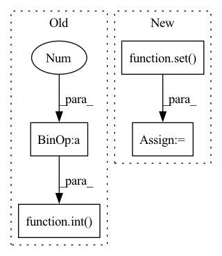

Pattern ID :7803

Before Change
self.LABEL = config["LABEL_FIELD"]
self.dropout = config["dropout"]
self.num_pair = int(self.num_feature_field * (self.num_feature_field-1) / 2)
self.dropout_layer = nn.Dropout(p=self.dropout)
self.sigmoid = nn.Sigmoid()
self.loss = nn.BCELoss()
After Change
self.feature_names = (self.token_field_names, self.token_seq_field_names, self.float_field_names)
self.feature_dims = (self.token_field_dims, self.token_seq_field_dims, self.float_field_dims)
self.get_feature2field()
self.num_fields = len(set(self.feature2field.values())) // the number of fields
self.num_pair = self.num_fields * self.num_fields
self.loss = nn.BCELoss()
In pattern: SUPERPATTERN
Frequency: 3
Non-data size: 4
Instances
Fragment ID: 27903261
Project Name: rucaibox/recbole
Commit Name: 03f9eefe3c1268c9b20fe6eda11199446e5951c5
Time: 2020-10-14
Author: xinyanruc@126.com
File Name: recbox/model/context_aware_recommender/fwfm.py
M Class Name: FwFM
N Class Name: FwFM
M Method Name: __init__(3)
N Method Name: __init__(3)
M Parent Class: ContextRecommender
N Parent Class: ContextRecommender
M File Name: recbox/model/context_aware_recommender/fwfm.py
N File Name: recbox/model/context_aware_recommender/fwfm.py
M Start Line: 37
M End Line: 37
N Start Line: 36
N End Line: 49
'>
Before Change
self._resamplers = []
self._bounds = bounds
for i in range(bounds[0], bounds[1] + 1):
rate = 2.0 ** (-float(i) / bins_per_octave)
s1, s2 = int(sample_rate / rate), int(sample_rate)
self._resamplers.append(
lilfilter.Resampler(
int(s1 / approximation_constant),
After Change
self._sample_rate = sample_rate
self._resamplers = []
self.fast_ratios = set()
self._bins_per_octave = 12
factors = primes.factors(sample_rate)
products = []
for i in range(1, len(factors) + 1):
'>
Fragment ID: 27903263
Project Name: kentonishi/torch-pitch-shift
Commit Name: 104442cf773ee57bcb8c4a0c5556f60c35cb7f37
Time: 2021-06-18
Author: kento24gs@outlook.com
File Name: torch_pitch_shift/main.py
M Class Name: PitchShifter
N Class Name: PitchShifter
M Method Name: __init__(3)
N Method Name: __init__(6)
M Parent Class:
N Parent Class:
M File Name: torch_pitch_shift/main.py
N File Name: torch_pitch_shift/main.py
M Start Line: 13
M End Line: 54
N Start Line: 16
N End Line: 45
'>
Before Change
// Estimate by "coupon collector"
maximal_reasonable_steps = 10 * edge_type_num * \
int(math.log2(edge_type_num)+1)
step_cnt = 0
for _ in range(edge_type_num):
while True:
After Change
new_edge_type = candidate_edge_types_list[new_edge_type_idx]
chosen_edge_types_list.append(new_edge_type)
candidate_edge_types_list.pop(new_edge_type_idx)
explored_node_type_set |= set(EdgeTypeStr2Tuple(new_edge_type))
return tuple(sorted(chosen_edge_types_list))
'>
Fragment ID: 27903262
Project Name: pku-dair/sgl
Commit Name: 93e7aac75c7a5fe5266c08615e4e5c0de463a86d
Time: 2022-04-21
Author: 82886739+ZhenbangYou@users.noreply.github.com
File Name: dataset/choose_edge_type.py
M Class Name: AnonimousClass
N Class Name: AnonimousClass
M Method Name: ChooseEdgeType(3)
N Method Name: ChooseEdgeType(3)
M Parent Class:
N Parent Class:
M File Name: dataset/choose_edge_type.py
N File Name: dataset/choose_edge_type.py
M Start Line: 29
M End Line: 56
N Start Line: 31
N End Line: 62